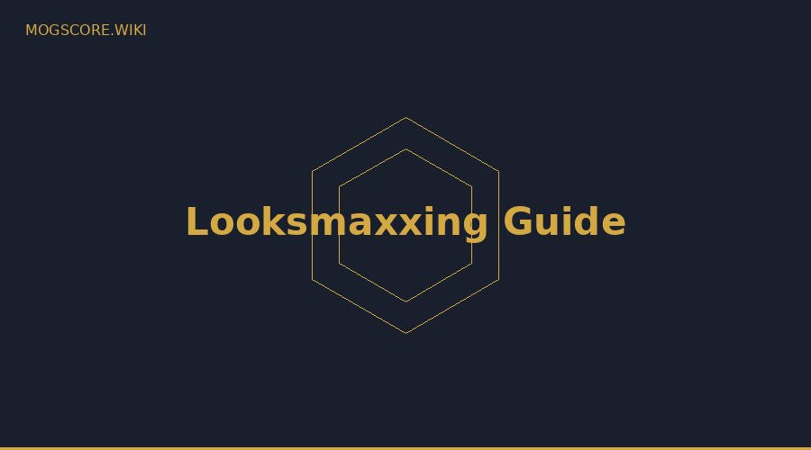

The most common question in looksmaxxing: how long does it actually take to see results? This guide gives you honest, realistic timelines for every major intervention — based on what the evidence actually supports, not what content creators claim for views.
The Honest Answer: It Depends on the Method
Different looksmaxxing interventions work on completely different timescales. Some produce visible changes in days. Others take years. Understanding which timeline applies to which method prevents the most common mistake: expecting fast results from slow methods, giving up early, and missing real progress.
Immediate Results (Days)
Camera and lighting optimization
The fastest looksmaxxing ROI available. Moving your webcam 15–25cm above eye level and switching to natural side lighting can raise your Omoggle score by 0.5–1.5 points immediately. This doesn't change your face — it optimizes how your existing structure is captured and measured. See: camera setup guide.
Water retention reduction
Reducing sodium, alcohol, and increasing water intake shows facial results within 24–72 hours. Overnight puffiness from poor sleep or alcohol can add significant visual facial fat. Eliminating these factors shows almost immediate improvement.
Short-Term Results (2–8 Weeks)
Skincare (4–6 weeks)
Skin clarity is scored directly by Omoggle at ~14% weight. A consistent routine — gentle cleanser, niacinamide 10% serum, SPF 50 — produces visible results in 4–6 weeks. Redness reduction and pore minimization are often noticeable in 2 weeks. Full skin transformation takes 3 months. See: skincare guide.
Haircut (immediate to 2 weeks)
A haircut that exposes your forehead and uses high contrast (volume on top, tight sides) shows results the day of. The right haircut frames facial structure and removes interference from Omoggle's landmark detection. See: haircut guide.
Medium-Term Results (2–6 Months)
Face fat loss (8–16 weeks for significant change)
The most impactful softmaxxing intervention for most people. At 0.5–1 lb/week fat loss rate, significant facial changes appear at 8–12 weeks. Full transformation to 12–15% body fat takes 4–6 months for most starting points. See: face fat loss guide.
Gym training — facial masculinization (3–6 months)
Heavy compound training elevates testosterone and growth hormone. Consistent training shows early facial masculinization effects at 3 months. Meaningful structural changes require 6+ months of consistent training. See: gym face guide.
Long-Term Results (6 Months to Years)
Mewing (months to years, adults)
Evidence for significant bone remodeling in adults is weak. However, postural improvement and muscle balance changes may produce modest jaw definition improvements over 6–24 months of consistent practice. Do it — it's free and has no downside — but set realistic expectations. See: mewing guide.
Jawline exercises (6–12 months)
Masseter hypertrophy from chewing-based exercises can add width and definition to the jaw. Results are modest and take 6–12 months of consistent practice. More effective when combined with low body fat. See: jawline guide.
The Realistic 6-Month Looksmaxxing Timeline
| Month | Priority | Expected Changes |
|---|---|---|
| Month 1 | Skincare + camera setup + sleep | Skin clarity up, puffiness down, better Omoggle scores |
| Month 2 | Fat loss phase begins + gym | Early facial slimming, skin continuing to improve |
| Month 3 | Maintain fat loss + haircut | Jawline emerging, skin transformed, visible difference |
| Month 4–5 | Continue fat loss + mewing habit | Significant facial definition, cheekbones visible |
| Month 6 | Evaluate and adjust | Full transformation from starting point visible |
What Won't Work in 6 Months
- Significant bone structure changes from mewing (adults)
- Canthal tilt improvement without surgery
- Height or skull shape changes
- Dramatic changes from supplements alone
Focusing on what you can't change in 6 months is the biggest mistake new looksmaxxers make. The fundamentals above — fat loss, skincare, sleep, gym — produce real, measurable improvements within the timeline.
Measure your baseline now and track monthly progress — use our free AI Face Analyzer to score all 6 Omoggle metrics at the start of your looksmaxxing journey.